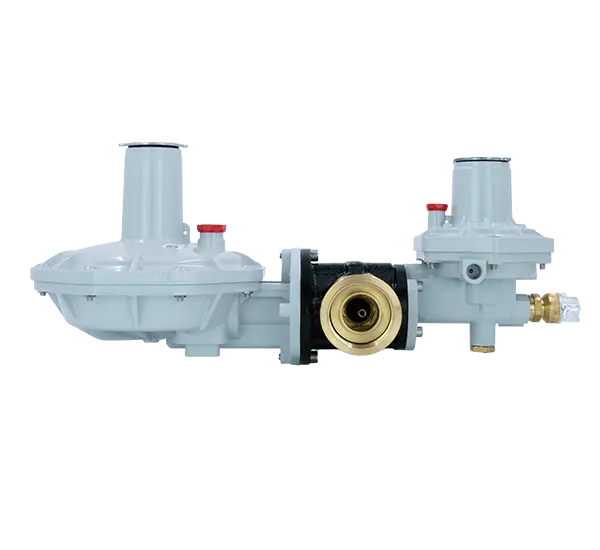

RMS-A İstasyonu
Yüksek basınç iletim hatları için tasarlanmış ana basınç düşürme istasyonları.


5000 m³/h RMS-B İstasyonu
İGDAŞ şebekelerine uygun, yüksek kapasiteli bölge ve imalat düşürme merkezi.

500 m³/h RMS-C İstasyonu
Endüstriyel tesisler ve ticari yapılar için kompakt ölçüm ve regülasyon panelleri.

750 m³/h RMS-C İstasyonu
Hassas tüketim fabrikaları için optimize edilmiş İGDAŞ onaylı hat istasyonu.

1000 m³/h RMS-C İstasyonu
Yüksek debili endüstriyel tesislerin kesintisiz gaz arzı için güvenli çözüm mekanizması.


400 m³/h RS-C İstasyonu
Kabinet tipi, emniyet kapatmalı gaz regülasyon ve ölçüm hattı imalatımız.

Çelik Filtre (Tip 1)
Gaz hatlarındaki partikülleri yüksek hassasiyetle süzerek ekipman emniyeti sağlar.

Çelik Filtre (Tip 2)
Yüksek basınç sınıflarına uygun, flanş bağlantılı özel endüstriyel kartuş filtre hattı.

Endüstriyel Eşanjörler
Basınç düşümü esnasında meydana gelen donmaları önlemek amacıyla tasarlanan ısı değiştiriciler.

ERG-SE (Çift Kademeli)
Emniyetli kapatma sistemleriyle donatılmış çift kademeli domestik basınç regülasyon elemanı.


ERG-SR (Çift Kademeli)
Yüksek tepki kararlılığı gösteren çoklu galeri domestik regülasyon hatları.


ERG-S (Çift Kademeli)
Kazan daireleri ve lokal kutular için kompakt yapılı basınç düşürme ünitesi.


ERG (Tek Kademeli)
Yalın mekanik altyapıyı odak alan tek kademeli domestik dağıtım modülü.


ERG-E (Tek Kademeli)
Bütçe odaklı projeler için geliştirilmiş tek kademeli stabilizasyon ünitesi.


ERG-H (Tek Kademeli)
Özel teknik altyapıyla inşa edilmiş ağır hizmet tipi tek kademeli regülasyon modülü.


ERG-EH (Tek Kademeli)
Hassas mekanik elemanlarla kurgulanmış hibrid domestik regülasyon ünitesi.


ERG-H1
Yüksek debili ağlar için kararlı akış sunan ağır hizmet tipi endüstriyel regülatör hattı.


ERG-H5
Güvenilir iç mekanizmalarla şekillendirilmiş endüstriyel şebeke basınç regülatörü.


ERG-H6
Hassas tüketimli sanayi hatları için optimize edilmiş kompakt regülasyon bloğu.

ERG-H7
Tam emniyet prensipleriyle kurgulanmış ağır sanayi altyapı bloğu.

Flanşlı Küresel Vana (API-6D)
API-6D güvencesiyle üretilmiş yüksek basınçlı flanşlı hat kesme vanası.

Kaynaklı Küresel Vana (API-6D)
Yekpare kaynaklı vana hattı.

S300 Duvar Tipi Kutu
Bina girişleri ve konut bağlantıları için geliştirilmiş şehir şebeke servis kabini.


S2300 Duvar Tipi Kutu
Çok açılı görsel derinlik sunan yüksek kapasiteli ticari servis kutusu hattı.

CES200 Yer Altı Kutu
Ağır zemin baskı kuvvetlerine dayanacak şekilde kurgulanmış yer altı şebeke altyapı bloğu.

S700 Duvar Tipi Kutu
Merkezi apartman girişleri için kurgulanmış modüler emniyet dağıtım kabini.

S220 Yeraltı Tipi Kutu
Ağır zemin trafiğine dayanıklı, şehir gaz ağları için tasarlanmış yer altı çözüm kabini.